ELTON JOHN
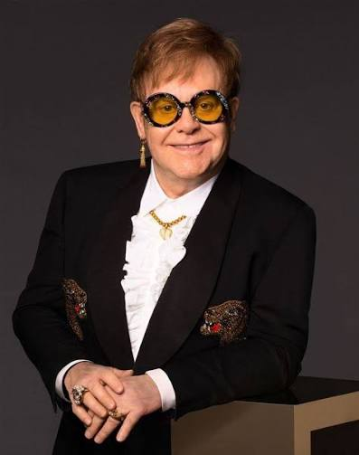
Damos la bienvenida a la pagina de ELTON JOHN
Aqui podras leer sobre la vida, trayectoria, colaboraciones y mas sobre el gran ELTON JOHN
Elton John, nacido como Reginald Dwight, comenzó su camino musical como un prodigio del piano que a los 11 años ya estudiaba en la Royal Academy of Music de Londres, antes de foguearse tocando en pubs y formando la banda de soul Bluesology. El verdadero punto de inflexión ocurrió en 1967, cuando respondió a un anuncio de la revista New Musical Express y conoció al letrista Bernie Taupin; juntos formaron una de las duplas creativas más exitosas de la historia, componiendo éxitos desde oficinas de editores musicales mientras Reggie adoptaba el nombre artístico de Elton John. Tras lanzar un modesto álbum debut sin gran impacto en el Reino Unido, su mánager le consiguió una serie de conciertos en Estados Unidos que cambiarían su destino para siempre:
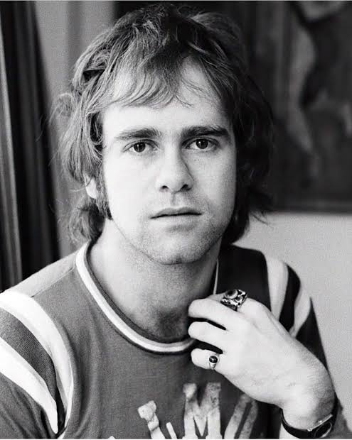
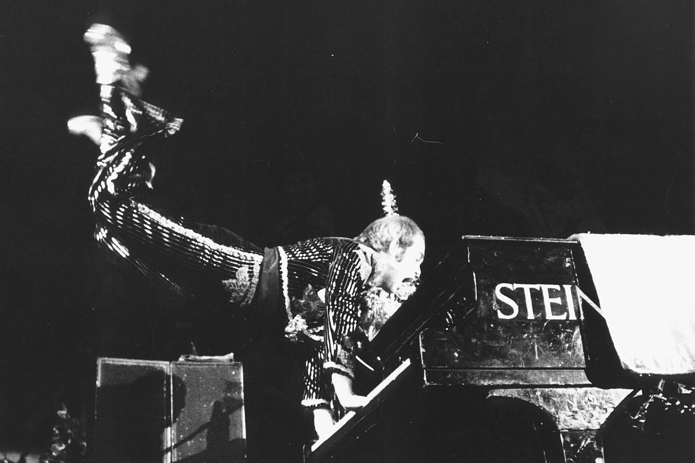
El 25 de agosto de 1970, Elton John desató un fenómeno cultural instantáneo con su debut en el legendario club The Troubadour de Los Ángeles, marcando el nacimiento de una superestrella de la noche a la mañana. Ante una audiencia repleta de grandes figuras de la industria y la música, el joven británico de 23 años dejó atrás su timidez para ofrecer un espectáculo de una intensidad física descomunal, aporreando el piano con un estilo salvaje, pateando la banqueta para tocar de pie e incluso suspendiéndose horizontalmente en el aire. Esta electrizante y acrobática presentación dejó atónitos a los críticos de la prensa estadounidense, quienes de inmediato lo proclamaron como la primera gran estrella de la nueva década y consolidaron esa mítica velada como uno de los debuts más transformadores en la historia del rock.
Durante el legendario concierto en el Troubadour, la interpretación de "Your Song" se convirtió en el punto culminante de la noche y en el catalizador definitivo de su estrellato. Cuando Elton John se sentó al piano para tocar esta íntima balada, la ruidosa audiencia y los exigentes críticos musicales de Los Ángeles quedaron en absoluto silencio, hipnotizados por la honestidad de la letra de Bernie Taupin y la conmovedora voz del músico británico. Esa ejecución perfecta no solo conmovió a los asistentes, sino que convenció de inmediato a la prensa de que estaban ante un compositor e intérprete fuera de serie, transformando instantáneamente a "Your Song" en el himno que selló su éxito en los Estados Unidos.
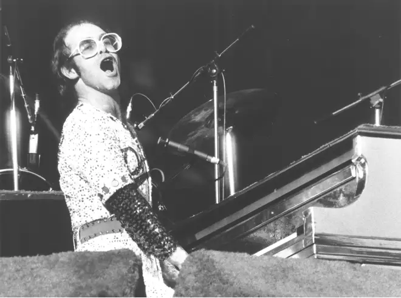
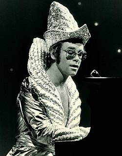
Elton John abrazó la estética futurista y espacial de principios de los años 70 como su primera gran declaración de extravagancia sobre el escenario. Dejando atrás los trajes sobrios, el músico comenzó a presentarse con llamativos atuendos plateados de cuello alto, telas metalizadas que reflejaban las luces del concierto y sombreros esculpidos de corte geométrico llenos de brillo. Esta época marcó la transición perfecta de un pianista de folk-rock a un ícono teatral del glam, demostrando que el apartado visual iba a ser tan impactante y vanguardista como sus complejas composiciones al piano.
Para mediados de la década de 1970, el exceso y el lujo se apoderaron por completo de su armario, llevando las plumas y los cristales a niveles nunca antes vistos en un artista masculino. Atuendos icónicos como su traje blanco cubierto de lentejuelas y coronado con colosales hombreras de plumas de ángel demostraron su gusto por la alta costura teatral. En este periodo, las gafas gigantescas con pedrería fina e incrustaciones brillantes se volvieron obligatorias, consolidando una silueta exagerada y mítica que lo transformó en la figura pop más magnética, vistosa e imitable de todo el planeta.
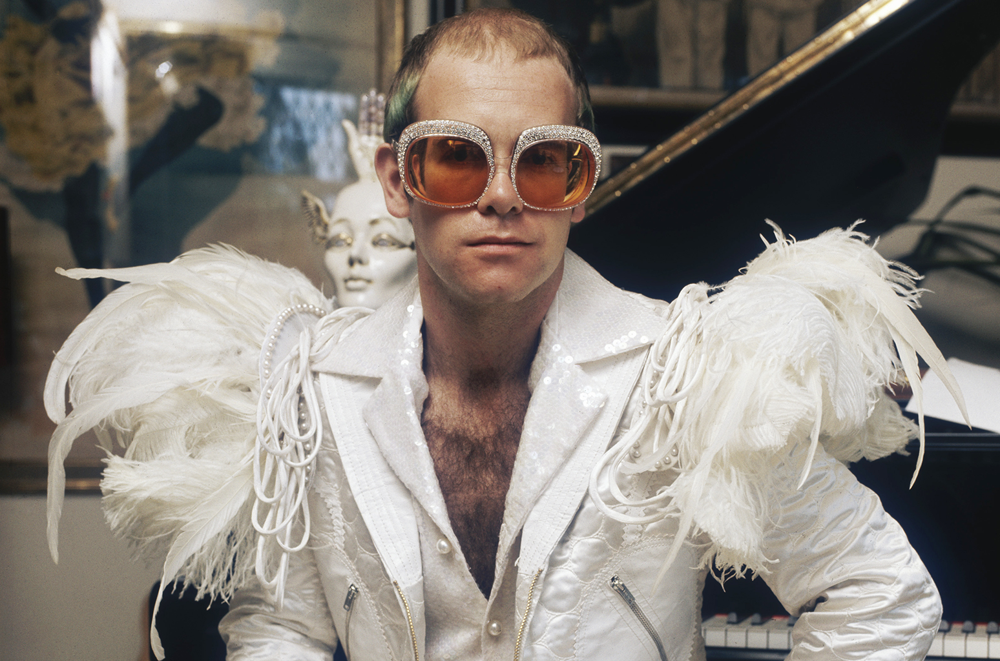
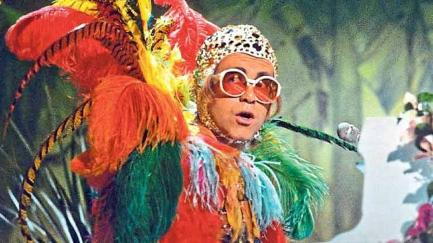
La extravagancia de Elton John no conoció límites cuando incorporó el color estridente y el disfraz temático en sus magnas presentaciones televisivas y conciertos en vivo. Inspirado por el carnaval y la psicodelia, el cantante llegó a presentarse con espectaculares tocados de plumas multicolores, trajes de loros o tucanes y gorros ajustados cubiertos de lentejuelas y pedrería exótica. Este tipo de vestuarios lúdicos reflejaba su deseo de convertir cada canción en una fiesta visual absoluta, desafiando las normas tradicionales de la moda y envolviendo su música en una vibrante capa de humor y genialidad pop.
El punto máximo de su provocación y teatralidad llegó en 1997, cuando celebró su cumpleaños número 50 disfrazado como una exuberante reina de la corte francesa del siglo XVIII. Inspirado en la figura de Luis XIV y María Antonieta, Elton sorprendió al mundo con un colosal traje barroco cubierto de miles de plumas blancas, encajes plateados, una gigantesca peluca empolvada de casi un metro de altura rematada por un barco de plata, y un maquillaje dramático de época. Con este imponente e histórico atuendo, el músico no solo demostró que era el rey indiscutible de la excentricidad, sino que elevó el arte del disfraz a una categoría de realeza y genialidad absoluta.
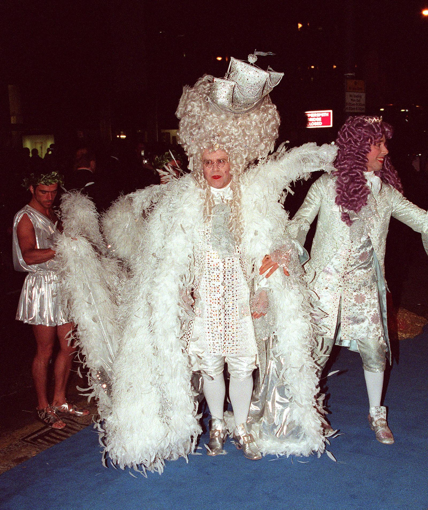
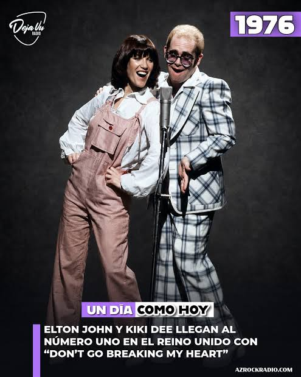
Con Kiki Dee, Elton John grabó el histórico tema "Don't Go Breaking My Heart" en los estudios Eastern Sound de Toronto, Canadá, canción que fue lanzada a nivel mundial el 21 de junio de 1976. Posteriormente, grabaron una versión de "True Love" en los estudios Townhouse de Londres, Reino Unido, publicada en noviembre de 1993 dentro del álbum Duets.
Con John Lennon, Elton John grabó la icónica canción "Whatever Gets You Thru the Night" en los estudios Record Plant de Nueva York, tema lanzado el 23 de septiembre de 1974. Poco después, grabaron juntos una versión de "Lucy in the Sky with Diamonds" en el estudio Caribou Ranch de Colorado, publicada el 15 de noviembre de 1974.

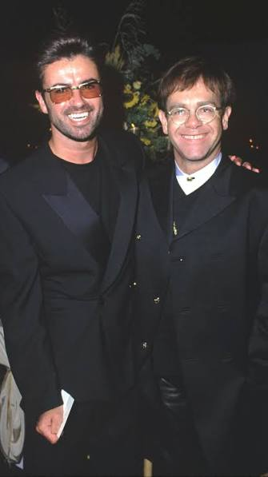
Con George Michael, Elton John grabó la célebre versión en vivo del tema "Don't Let the Sun Go Down on Me" en el estadio Wembley Arena de Londres, Reino Unido, durante un concierto benéfico el 23 de marzo de 1991, colaboración que fue lanzada oficialmente al mercado el 25 de noviembre de 1991.
Con Stevie Wonder, Elton John unió su talento en la emotiva balada gospel y soul titulada "Finish Line", grabada entre los estudios Westlake de Los Ángeles y los estudios Abbey Road de Londres, y lanzada al mercado el 30 de septiembre de 2021 dentro del álbum The Lockdown Sessions.
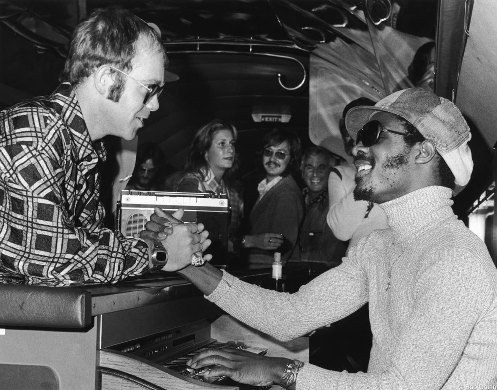
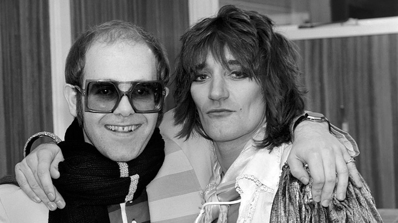
La primera de estas grabaciones fue el energético tema de rock "Let Me Be Your Car" (escrito especialmente por Elton y Bernie Taupin para Rod), grabado en los estudios Morgan de Londres, Reino Unido y lanzado al mercado el 27 de septiembre de 1974 como parte del álbum Smiler de Stewart. Décadas más tarde, los dos astros británicos volvieron a juntarse en una cabina para grabar una versión jazzera del clásico "Makin' Whoopee", registrada en los estudios The Record Plant de Los Ángeles y publicada de manera oficial el 18 de octubre de 2005 dentro del volumen Thanks for the Memory: The Great American Songbook, Volume IV de Rod.
Con el aclamado tenor italiano Luciano Pavarotti, Elton John grabó la monumental pieza pop operística titulada "Live Like Horses". La versión de estudio del dueto se registró en los conocidos Townhouse Studios de Londres, Reino Unido, y se lanzó oficialmente al mercado a nivel mundial el 2 de diciembre de 1996.
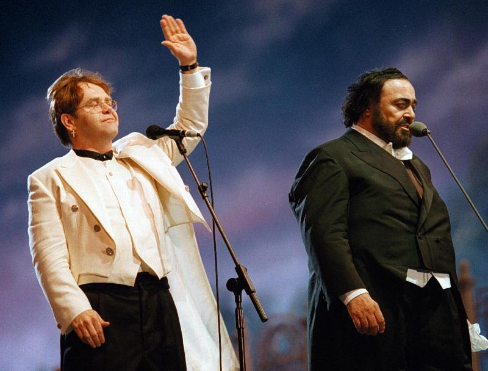
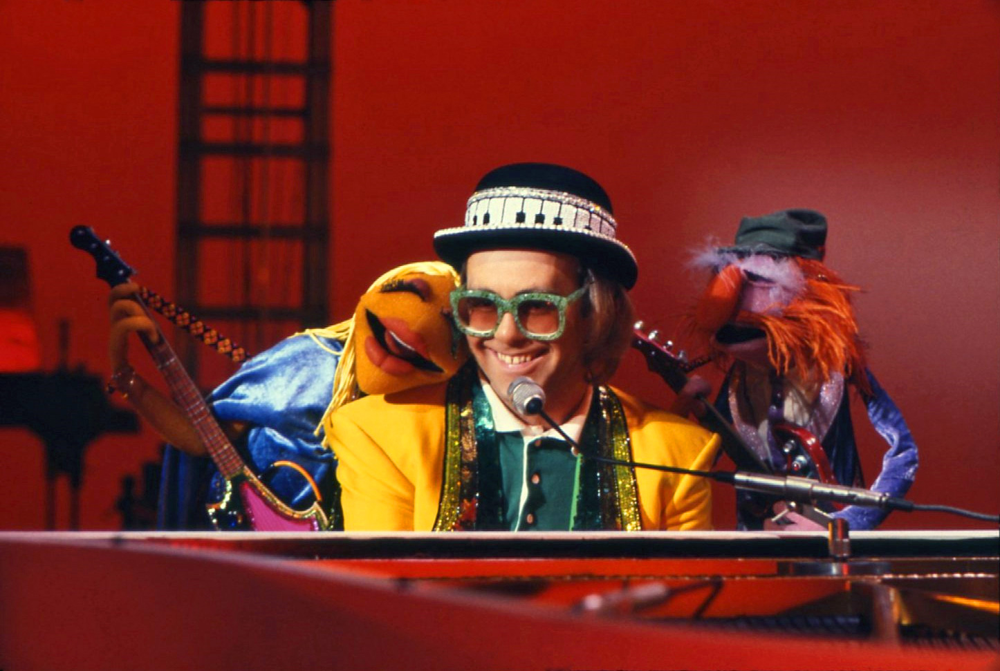
Con The Muppets, Elton John protagonizó un episodio histórico de televisión donde interpretó cuatro canciones: abrió con "Crocodile Rock" (junto a Dr. Teeth & The Electric Mayhem), tocó "Bennie and the Jets" y "Goodbye Yellow Brick Road", y cerró con un divertido dueto de "Don't Go Breaking My Heart" junto a Miss Piggy. Esta mítica colaboración fue grabada del 25 al 27 de octubre de 1977 en los ATV Elstree Studios en Borehamwood, Reino Unido, emitiéndose originalmente en televisión el 8 de enero de 1978.
La primera gran colaboración ocurrió cuando unieron fuerzas con los miembros sobrevivientes de Queen para interpretar el himno "Bohemian Rhapsody" en el mítico Estadio de Wembley en Londres, Reino Unido. Esta explosiva e histórica presentación tuvo lugar el 20 de abril de 1992 durante el Concierto Tributo a Freddie Mercury. Pocos meses después, ambos astros volvieron a encontrarse frente a frente para tocar la monumental balada "November Rain". En esta ocasión, la presentación incluyó a toda la banda Guns N' Roses y se llevó a cabo en el Pauley Pavilion de Los Ángeles, Estados Unidos, el 9 de septiembre de 1992, sirviendo como el gran cierre de la ceremonia de los MTV Video Music Awards de ese año.
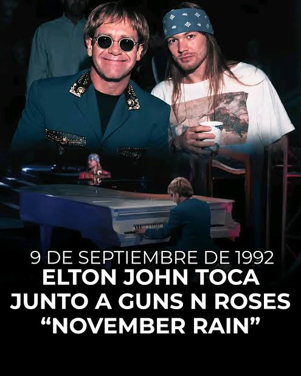
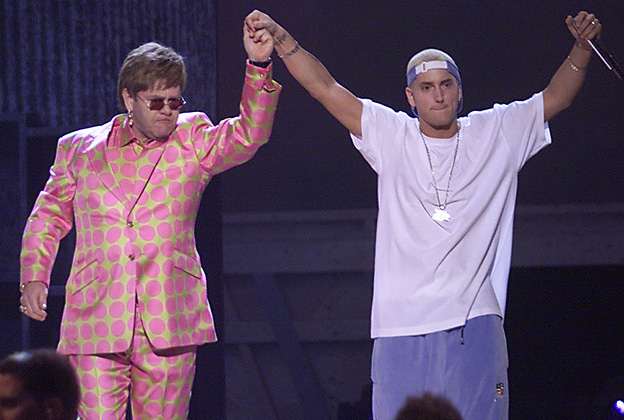
Con Eminem, Elton John protagonizó una de las colaboraciones más impactantes y revolucionarias en la historia de la cultura pop al interpretar juntos el éxito de rap "Stan". Esta icónica e histórica presentación en vivo tuvo lugar sobre el escenario del Staples Center en Los Ángeles, Estados Unidos, la noche del 21 de febrero de 2001 durante la 43.ª edición de los Premios Grammy.
La primera de ellas fue la potente versión del clásico de heavy metal "Nothing Else Matters" de Metallica, grabada en los estudios Beverly Keel de Los Ángeles y lanzada al mercado el 22 de junio de 2021 como el sencillo principal del álbum tributo The Metallica Blacklist. En este tema, Miley se encargó de la voz principal mientras Elton tocó el piano de forma magistral. Pocos meses después, ambos artistas volvieron a unirse en el estudio para grabar una versión especial e íntima de "Tiny Dancer", registrada en los estudios Gold Diggers de West Hollywood y publicada de manera oficial el 22 de octubre de 2021 dentro del álbum colaborativo de Elton, The Lockdown Sessions.
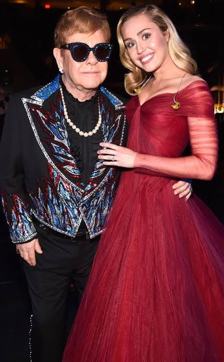
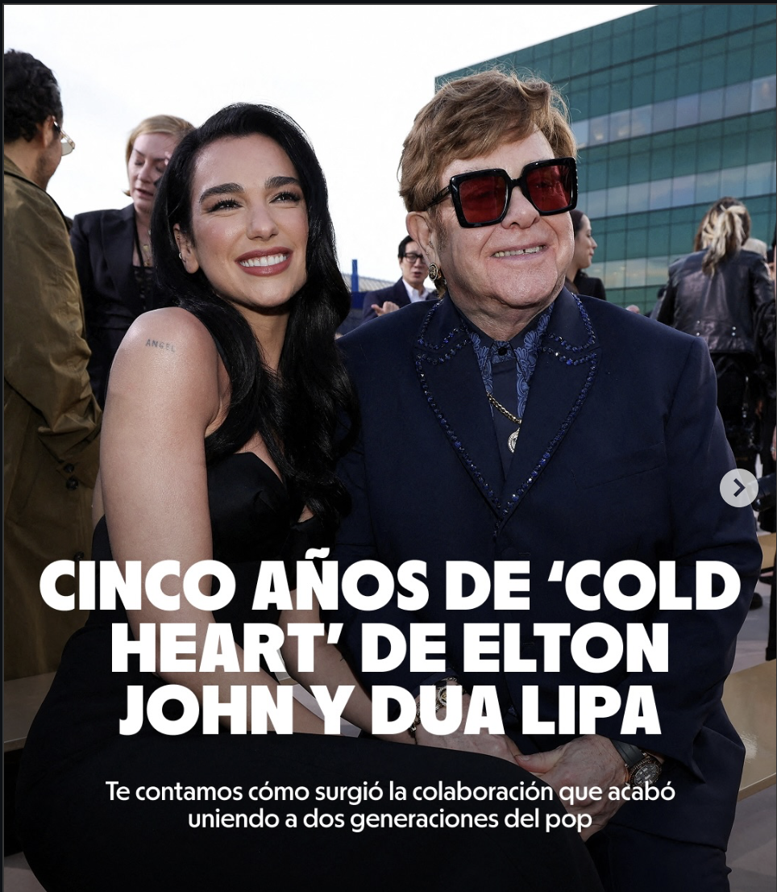
Con Dua Lipa, Elton John unió su talento en el masivo éxito global titulado "Cold Heart (PNAU Remix)". La pista fue grabada y mezclada de forma remota entre los estudios de producción de Londres y Sídney (Australia) a través de la edición del trío australiano PNAU, y fue lanzada oficialmente al mercado el 13 de agosto de 2021 como el sencillo principal del álbum The Lockdown Sessions.
Con Ozzy Osbourne, el legendario líder de Black Sabbath, Elton John colaboró en la emotiva y desgarradora balada de rock titulada "Ordinary Man". Las sesiones de grabación se llevaron a cabo en los estudios de Andrew Watt en Los Ángeles, Estados Unidos, donde Elton tocó el piano y compartió voces con Ozzy, tema que fue lanzado oficialmente al mercado a nivel mundial el 10 de enero de 2020 como el sencillo principal del álbum homónimo de Osbourne.
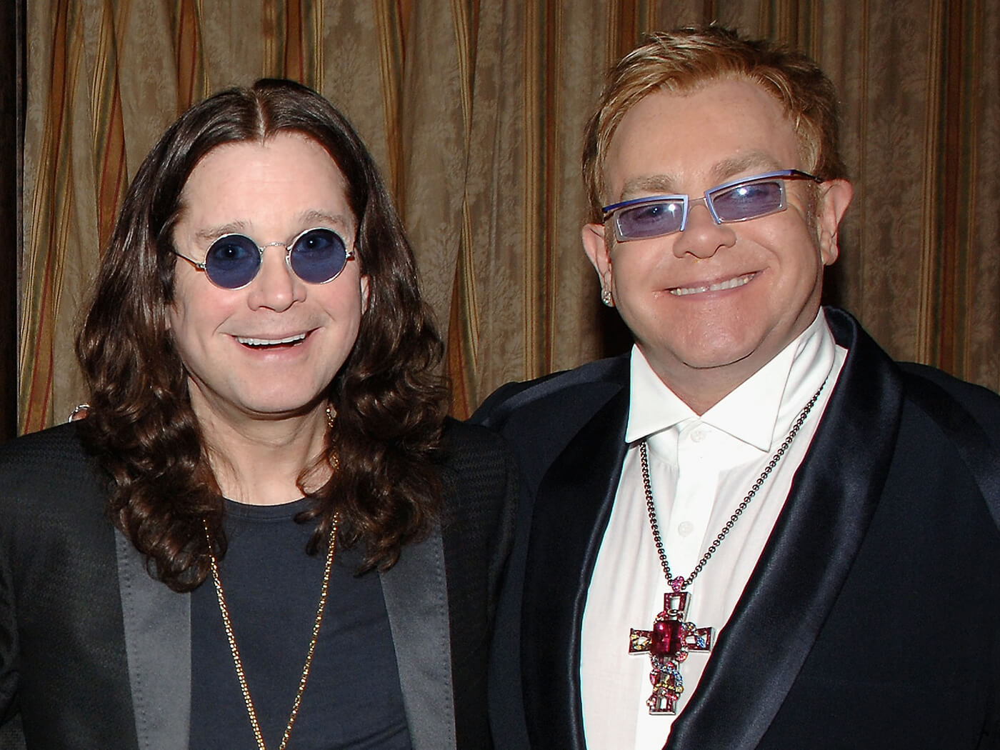

Con Britney Spears, Elton John grabó el exitoso hit dance-pop titulado "Hold Me Closer" (una moderna reinterpretación de su clásico "Tiny Dancer"). Las voces de ambos artistas se registraron en los estudios de grabación de Beverly Hills en Los Ángeles, Estados Unidos, bajo la producción de Andrew Watt, y la canción fue lanzada oficialmente al mercado a nivel mundial el 26 de agosto de 2022.
Con Lady Gaga, Elton John ha colaborado formalmente en el tema de electropop titulado "Sine From Above". La canción fue grabada en los estudios Conway Recording Studios de Los Ángeles, Estados Unidos, y lanzada oficialmente al mercado el 29 de mayo de 2020 como parte del sexto álbum de estudio de Gaga, Chromatica.

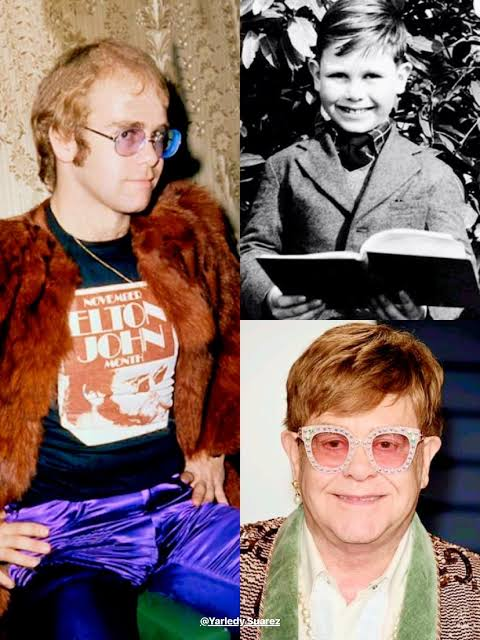
La evolución de Elton John es el viaje de un prodigio que transformó la timidez en una genialidad pop sin precedentes. Desde su infancia como Reginald Dwight, un disciplinado estudiante de piano clásico, avanzó hacia una juventud electrizante marcada por su salvaje debut en el Troubadour y el nacimiento de su inconfundible estilo visual. Finalmente, su transición a la adultez consolidó a una leyenda madura y vanguardista que, sin perder su esencia extravagante, se convirtió en el gran maestro de las colaboraciones globales de la música moderna.
En la actualidad, Elton John disfruta de una etapa de plenitud absoluta, retirado de las extenuantes giras mundiales para dedicarse por completo a su vida familiar junto a su esposo David Furnish y sus dos hijos. Lejos de los escenarios pero tan vigente como siempre, el artista ha sabido equilibrar su rol como el gran patriarca de su hogar con su incombustible amor por la música, manteniéndose activo en la producción musical a través de exitosas colaboraciones con nuevas generaciones de músicos y el liderazgo de su fundación contra el VIH. Esta madurez dorada lo encuentra rodeado de afecto y estabilidad, consolidándolo no solo como una leyenda viva de la cultura pop, sino como un hombre feliz que comparte su legado con las personas que más ama.